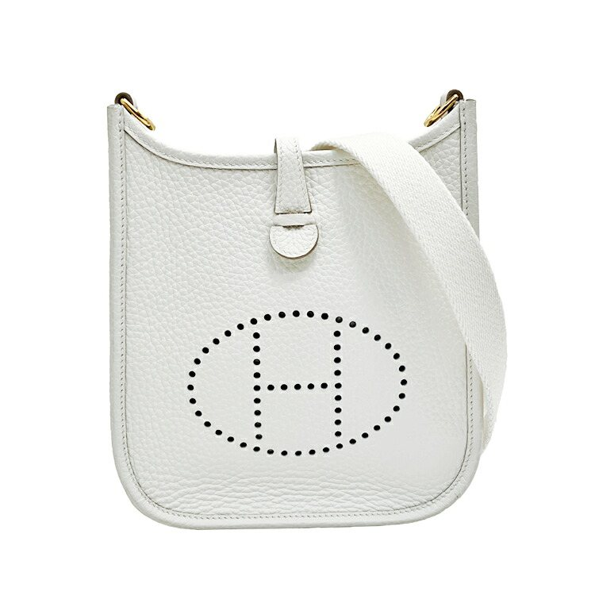
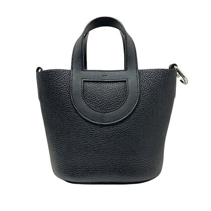
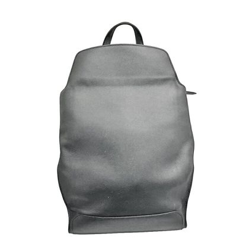
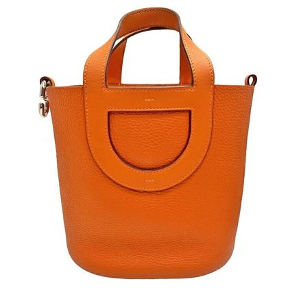

エルメスのバッグの選び方｜バーキン・ケリー・ピコタンなど定番モデルの違いと中古価格

この記事の結論
- 使う場面（仕事・普段・お出かけ）と持ち方から選ぶと失敗しにくい
- 持ち手2本のバーキン、持ち手1本＋ショルダーのケリー、バケツ型のピコタンロックが代表的な形
- 中古はモデル・サイズ・素材・状態で価格の幅が大きいので、モデル別の価格表で目安をつかむ
エルメスのバッグは「持ち方」と「使う場面」で選ぶのが近道です。荷物が多い日や仕事ならバーキン、きちんとした場にはケリー、普段使いならピコタンロックやエヴリンが候補になります。中古はモデルやサイズで価格の幅が大きいため、下の価格表で目安を確認してから探すと効率的です。
定番モデルの違いを表で比較
| モデル | 形 | 持ち方 | 開け閉め | 向いている場面 |
|---|---|---|---|---|
| バーキン | 台形のハンドバッグ | 手持ち（持ち手2本） | かぶせ蓋とベルト、金具で留める | 仕事、荷物が多い日 |
| ケリー | 台形のハンドバッグ | 手持ち（持ち手1本）とショルダー | かぶせ蓋とベルト | 式典・会食などきちんとした場 |
| ピコタンロック | バケツ型 | 手持ち | 口をベルトと金具で軽く留める | 普段使い、サブバッグ |
| エヴリン | 平たいショルダー | 斜めがけ | かぶせ蓋 | 普段使い、両手を空けたい日 |
| ボリード | 丸みのあるボストン型 | 手持ちとショルダー | ファスナー | 旅行、普段使い |
形の違いは「どれだけ荷物が入るか」だけでなく、「片手で出し入れできるか」にも関わります。口を開けたまま使いやすいのはバーキンとピコタンロック、蓋を閉じてすっきり持つのが基本なのはケリーです。
定番モデルの中古価格
提携事業者で販売中の商品から、モデル別に価格を集計しました。モデル名を選ぶと、図鑑ページで素材・サイズ例・状態ランク別の価格を確認できます。
| モデル（図鑑へ） | 販売中 | 最安 | 中央値 | 最高 |
|---|---|---|---|---|
| エルメス バーキン | 0点 | — | — | — |
| エルメス ケリー | 1点 | ¥22,000 | ¥22,000 | ¥22,000 |
| エルメス ピコタンロック | 1点 | ¥418,000 | ¥418,000 | ¥418,000 |
| エルメス エヴリン | 1点 | ¥424,600 | ¥424,600 | ¥424,600 |
| エルメス ボリード | 0点 | — | — | — |
販売中の点数が少ないモデルは、個別の商品の価格に左右されます。毎月の推移は相場レポートで確認できます。
サイズの選び方
バーキンやケリーは、数字でサイズを表します（バーキンは25・30・35など、ケリーは25・28・32など）。数字はおおよその横幅（cm）の目安です。
- 小さめ（25前後）：財布・スマートフォン・化粧ポーチが中心の日に。軽く、服装を選びにくい。
- 中くらい（28〜30前後）：普段使いと仕事の両方に使いやすいバランス。
- 大きめ（32〜35以上）：書類やタブレットを持ち歩く人、旅行向け。レザーの重さも増えます。
サイズの展開や実寸は年代・製品によって異なるため、購入前に販売ページの実寸を確認してください。
素材の違い
| 素材 | 特徴 | 向いている人 |
|---|---|---|
| トゴ | 型押しの子牛革。細かいシボがあり、傷が目立ちにくい | 毎日気軽に使いたい |
| エプソン | 細かい型押しで張りがあり、形が崩れにくい | かっちりした形を保ちたい |
| トリヨンクレマンス | 大きめのシボでやわらかく、手になじむ | やわらかい質感が好き |
| ボックスカーフ | なめらかで艶がある。傷や水じみがつきやすい | クラシックな雰囲気を楽しみたい |
中古で選ぶときのチェックポイント
- 刻印：ブランドの刻印と、製造年を表す刻印の位置・書体。詳しくはエルメスの刻印の記事で解説しています。
- 角と底：スレ・色落ち・型崩れ。
- 持ち手：黒ずみ・ひび割れ・変形。
- 金具：傷やメッキのはがれ、開閉の具合。
- 付属品：バーキンやケリーはカデナ（南京錠）・鍵・クロシェット（鍵入れ）、保存袋などの有無。
| 状態 | 点数 | 中央値 |
|---|---|---|
| A美品 | 2点 | ¥380,050 |
| AB良品 | 4点 | ¥418,000 |
販売中のエルメスのバッグ
提携事業者で販売中のエルメスのバッグ
PR掲載商品は提携事業者が販売する商品です。購入は楽天市場の販売ページで行います。価格・在庫は確認日時点の情報で、売り切れの場合があります。
 状態 A
状態 A エルメス
HERMES エルメス エヴリン TPM トリヨンクレマンス ベトン ショルダーバッグ W刻印 2024年 メンズ レディース GD金具 ゴールド金具 レザー ホワイト系
¥424,600税込

状態 ABエルメス
HERMES エルメス インザループ 18 ハンドバッグ トリヨンクレマンス ヴォ—スイフト ブラック シルバー金具 B刻印 2023年 レディース
¥544,500税込

状態 ABエルメス
HERMES エルメス シティバッグ エクラ 27 エバーカラー ノワール ヴェールシプレ リュックサック C刻印 2018年 ブラック メンズ レディース シルバー金具 レザー
¥418,000税込
 状態 A
状態 A エルメス
HERMES エルメス エールバッグジップ ルトゥルネ キャビン 50 2way ハンドバッグ ショルダーバッグ トワルクリスヴァイキング ヴァッシュハンター シルバー金具 レザー キャンバス ブラック エクリュ Y刻印（2020年）
¥335,500税込
 状態 AB
状態 AB エルメス
HERMES エルメス ピコタンロック PM 18 トリヨンクレマンス W刻印 2024年 グリーン系 ハンドバッグ レザー ゴールド金具 レディース
¥418,000税込

状態 ABエルメス
HERMES エルメス インザループ 18 ハンドバッグ トリヨンクレマンス ヴォ—スイフト オレンジ シルバー金具 レディース W刻印 2024年 レディース
¥416,900税込
よくある質問
バーキンとケリーはどう違いますか？
持ち手の本数と使い方が大きな違いです。バーキンは持ち手が2本で口を開けたままでも使いやすく、ケリーは持ち手1本とショルダーストラップで、蓋を閉じてすっきり持つのが基本です。詳しくは「バーキンとケリーの違い」の記事で比較しています。
初めてのエルメスのバッグは何がいいですか？
普段使いならピコタンロックやエヴリン、仕事や荷物の多い日にはバーキン、式典などきちんとした場にはケリーが候補になります。使う場面とサイズから選ぶと失敗しにくいです。
中古のエルメスのバッグで確認することは？
刻印、角や持ち手の状態、金具、付属品（カデナ・鍵・クロシェット・保存袋など）を確認します。状態ランクと写真の両方を見ることが大切です。
関連ページ：エルメスの図鑑ページ／バーキンとケリーの違い／バーキンの基礎知識